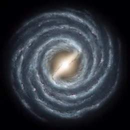
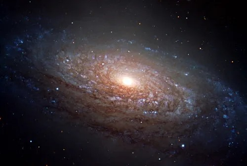

Es un conglomerado de cientos de miles de millones de estrellas, gas interestelar (fundamentalmente hidrógeno) y polvo interestelar (granos de silicantos). Se mantiene como sistema gracias a la atracción gravitacional.
Patrón de brazos espirales y estos, contienen estrellas jóvenes y mucho polvo y gas interestelar.
Posesión de una distribución esférica en torno al centro de la galaxia y conteniendo estrellas viejas.
Se encuentra en el centro de la galaxia y da lugar a parte de las estrellas más viejas.
Todas las galaxias se forman por contracción gravitacional de una o varias nubes pre galácticas y, dependiendo de su cinemática inicial, pueden conservar su momento angular y por lo tanto poseer velocidades de rotación.
Son dos y son:
| Nombre | Descripción | Imagen |
|---|---|---|
| Galaxias espirales |
Son de diversos grados de circularidad y tienen brazos con patrones espirales |
 |
| Galaxias elípticas |
Van desde casi esféricas hasta más ovoideas e irregulares. |
 |
| Nombre | Descripción | Imagen |
Para más información da clic en el siguiente botón, el cual lo llevara aún vídeo.